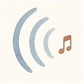
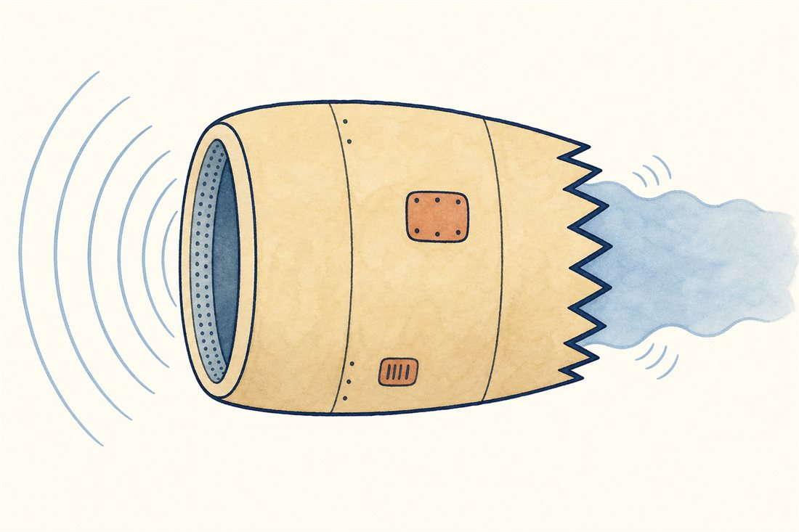

第2巻 だい8わ ── おとの章うたうエンジン、ふるえる はね
昔の空港を知る人は「ジェットは雷の音」と言います。いまの空港はずいぶん静かになりました。魔法ではなく物理です。第1巻第8話でロケットの爆音を手なずけましたが、飛行機のエンジンには続きの物語がある——音を出す張本人が、この40年で交代したのです。今日はエンジンの声の解剖と、それからもうひとつ、翼たちの「ふるえ」の話。

声の話のつぎは、ふるえの話です。何百枚もの翼が高速で回るこの機械にとって、振動は騒音より深刻な敵——数秒で機械を壊す種類のふるえがあるからです。
よりみちおそろしい8乗則 — 空港が静かになった理由
乱流噴流の音響パワーは噴流速度の8乗に比例します（Lighthill, 1952）。8乗です——噴流を2割遅くするだけで、音のパワーは0.8⁸≒2割弱まで落ちる。つまり第4話の「大きく、ゆっくり投げる」は、燃費の話であると同時に史上最強の消音器でした。細く速い噴流で雷鳴を上げた初期ジェットの主役騒音は、いまや脇役。残る低周波を削るのが後縁のギザギザシェブロン（内外の流れの混合をなめらかに促し、低周波の轟きを生む大きな乱流の塊を砕く——かわりに細かな乱れが増える取引つき）で、ナセル内側の音響ライナ（無数の小穴＋背後の小部屋＝ヘルムホルツ共鳴器の壁紙）がファンの音を吸います。
よりみちフラッター — 空気が背中を押すとき
ブランコは、押すタイミングが合うとどこまでも大きく揺れます。翼やファンブレードでも同じことが起きえます——振動にともなう空気力の変化が、減衰ではなく加振の側に回ると、揺れが揺れを育てる自励振動（フラッター）になり、条件が揃えば数秒で構造を壊します。だから設計は「運転範囲のどこでもフラッター境界に届かない」ことを解析と試験で保証する。第1巻第8話のPOGO（推進系と構造の自励ループ）と、「ループが正帰還になったら負け」という同じ文法の現象です。離陸時に先端超音速で回るファン（バズソー音の主）は、この境界との際どい付き合いの達人でもあります。
 流体屋のためのノート
流体屋のためのノート
8乗則はLighthillの音響アナロジー——N-S方程式を波動方程式＋四重極源の形に書き換えた枠組み——の帰結で、亜音速・コンパクト源の仮定つきです（超音速噴流では指数が下がりマッハ波放射が主役に——第1巻の爆音の世界）。ファン騒音はダクト音響モードのカットオン/カットオフが支配し、動翼と静翼の枚数の組み合わせで干渉音を「伝わらないモード」に押し込むのが古典的な設計芸。フラッターは換算振動数と質量比の無次元世界で、CFDとCAA・構造の連成解析が主戦場です。ブレードのわずかな個体差（ミスチューニング）が振動エネルギーの局在を生む一方、うまく設計された意図的なミスチューニングはフラッター抑制に効く——不完全さが毒にも薬にもなる、味わい深い分野です。次はいよいよ最終話、実物での答え合わせへ。
{kind=link}
・M. J. Lighthill, "On Sound Generated Aerodynamically I", Proc. R. Soc. A 211 (1952)／Wikipedia "Lighthill's eighth power law"
・バズソー音・ファン騒音: Wikipedia "Turbofan"
・E. H. Dowell (ed.), A Modern Course in Aeroelasticity（フラッター）